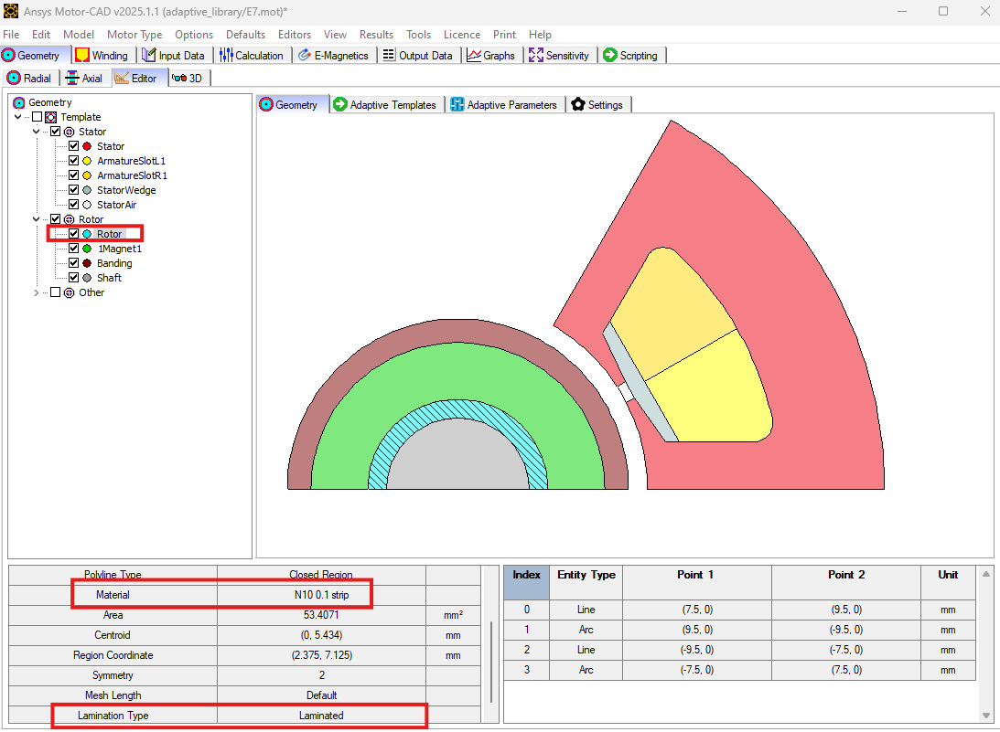
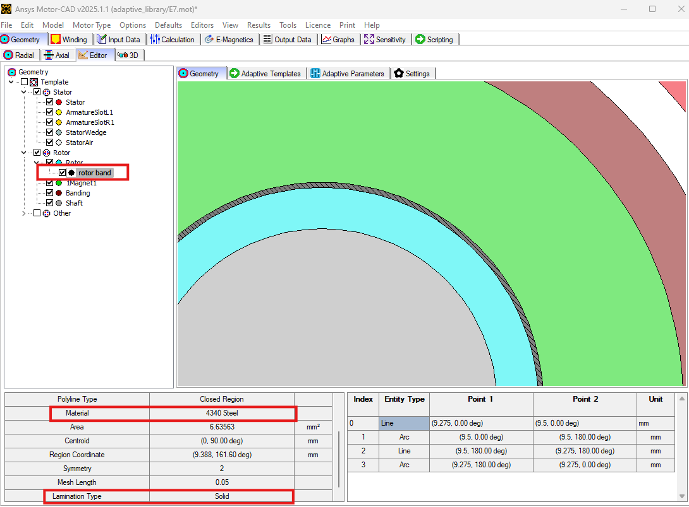
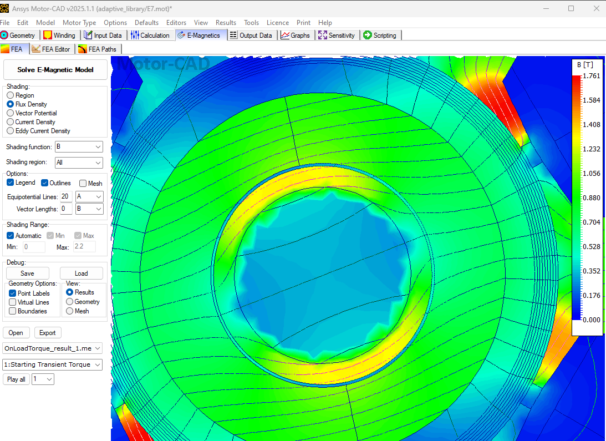
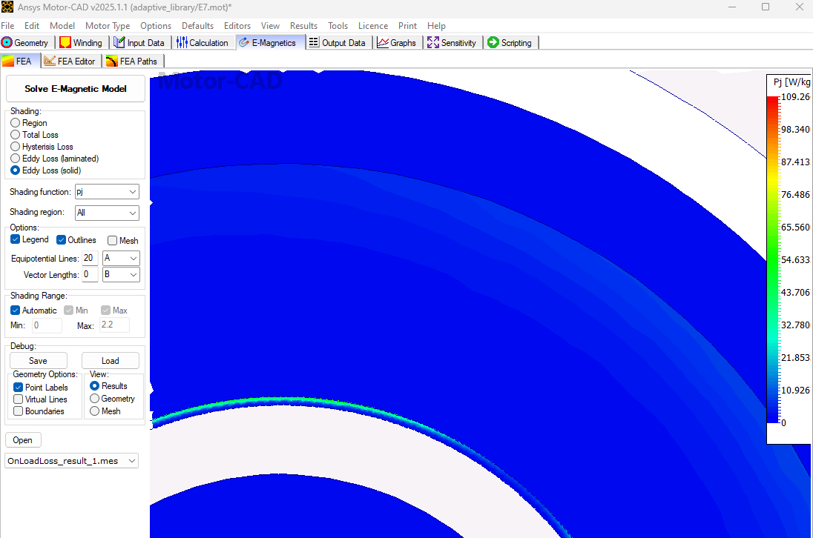
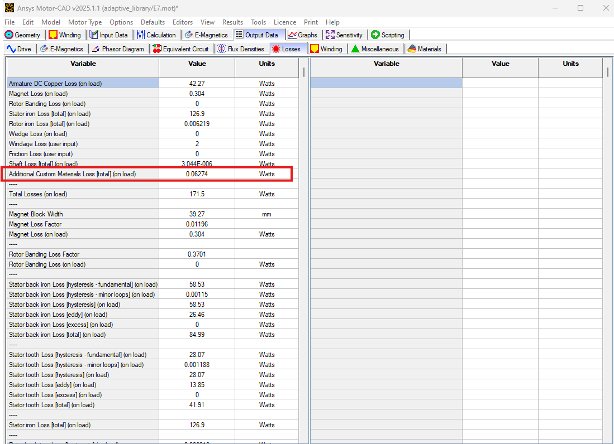

Note
Go to the end to download the full example code.
Material and Mesh Properties#
This script applies the adaptive templates functionality to modify material and mesh properties in a turbocharger machine.
Note
Adaptive Templates material and mesh properties described in this example require v2025.1.1 (Motor-CAD 2025 R1 Update) or later
Perform required imports#
Import pymotorcad to access Motor-CAD.
Import Arc, EntityList, Coordinate, Line, Line, Region, rt_to_xy
to define the adaptive template geometry.
Import os, shutil, sys, and tempfile
to open and save a temporary .mot file if none is open.
import os
import shutil
import sys
import tempfile
import ansys.motorcad.core as pymotorcad
from ansys.motorcad.core.geometry import (
Arc,
Coordinate,
EntityList,
Line,
Region,
RegionType,
rt_to_xy,
)
Connect to Motor-CAD#
If this script is loaded into the Adaptive Templates file in Motor-CAD, the current Motor-CAD instance is used.
If the script is run externally, these actions occur: a new Motor-CAD instance is opened,
the e7 IPM motor template is loaded and the file is saved to a temporary folder.
To keep a new Motor-CAD instance open after executing the script, use
the MotorCAD(keep_instance_open=True) option when opening the new instance.
Alternatively, use the MotorCAD() method, which closes the Motor-CAD instance after the
script is executed.
if pymotorcad.is_running_in_internal_scripting():
# Use existing Motor-CAD instance if possible
mc = pymotorcad.MotorCAD(open_new_instance=False)
else:
mc = pymotorcad.MotorCAD(keep_instance_open=True)
# Disable popup messages
mc.set_variable("MessageDisplayState", 2)
if not "PYMOTORCAD_DOCS_BUILD" in os.environ:
mc.set_visible(True)
mc.load_template("e7")
# Open relevant file
working_folder = os.path.join(tempfile.gettempdir(), "adaptive_library")
try:
shutil.rmtree(working_folder)
except:
pass
os.mkdir(working_folder)
mot_name = "E7"
mc.save_to_file(working_folder + "/" + mot_name + ".mot")
# Reset geometry to default
mc.reset_adaptive_geometry()
The Geometry -> Editor tab contains the Geometry Tree. Here the user can select a region to visualise relevant information such as entities, material type etc. For example, the Rotor material is defined as Laminated with material N10 0.1 strip. From Motor-CAD version 2025 R1 onwards, a user can define different materials as well as the lamination type such as Solid or Laminated as will be demonstrated in this example.
Create the Adaptive Templates geometry#
Set adaptive parameter if required#
mc.set_adaptive_parameter_default(
"Rotor_band_thickness", 0.225
) # Adaptive parameter of rotor band thickness
mc.set_adaptive_parameter_default(
"Rotor_band_mesh_length", 0.05
) # Adaptive parameter for mesh density of rotor band
Create points and entities for rotor band#
rt_region = mc.get_region("Rotor") # get the rotor region
st_bore = mc.get_variable("Stator_Bore") # Get the stator inner diameter
airgap = mc.get_variable("Airgap") # Airgap
mag_thickness = mc.get_variable("Magnet_thickness") # Magnet thickness
rt_radius = st_bore / 2 - airgap - mag_thickness # Rotor lamination outer radius
rt_band_thickness = mc.get_adaptive_parameter_value("Rotor_band_thickness") # Read the adaptive
# parameter for rotor band thickness
rt_band_radius = rt_radius - rt_band_thickness
symm_angle = 360 / rt_region.duplications
p1 = Coordinate(rt_to_xy(rt_radius, 0)[0], rt_to_xy(rt_radius, 0)[1])
p2 = Coordinate(rt_to_xy(rt_radius, symm_angle)[0], rt_to_xy(rt_radius, symm_angle)[1])
p3 = Coordinate(rt_to_xy(rt_band_radius, 0)[0], rt_to_xy(rt_band_radius, 0)[1])
p4 = Coordinate(rt_to_xy(rt_band_radius, symm_angle)[0], rt_to_xy(rt_band_radius, symm_angle)[1])
line_1 = Line(p3, p1)
line_2 = Line(p2, p4)
arc_mag = Arc(p1, p2, centre=None, radius=rt_radius)
arc_rt = Arc(p4, p3, centre=None, radius=-rt_band_radius)
Create rotor band region with material and mesh properties#
rt_band = Region(region_type=RegionType.rotor)
rt_band.name = "rotor band"
rt_band.entities = EntityList([line_1, arc_mag, line_2, arc_rt])
rt_band.duplications = rt_region.duplications
rt_band.parent = rt_region
Change the material using the Region.material method.
rt_band.material = "4340 Steel"
Change the mesh length / density using the Region.mesh_length method.
rt_band.mesh_length = mc.get_adaptive_parameter_value("Rotor_band_mesh_length")
Change the lamination type to Solid from Laminated using the Region.lamination_type method.
rt_band.lamination_type = "Solid"
mc.set_region(rt_band)
The new rotor band region should be visible in the Geometry tab, with the updated material and lamination type.
Run the EMag (On Load > Torque) calculation#
The flux density distribution of the rotor with rotor band will be visible as shown below.
As the rotor band region is defined as Solid lamination type, eddy current losses can also be observed.
The eddy current losses are confined to the narrow band, as shown above. Hence, by creating a band region and controlling the mesh length of specific regions, the user can make a computationally efficient model as presented in this example.
Notice the different mesh densities of the rotor and rotor-band regions. As rotor band density is an adaptive parameter, the user can change it accordingly.

Eddy current losses of the rotor band region created by the adaptive templates script will be reported under the Output Data -> Losses tab as Additional Custom Materials Loss.
Load in Adaptive Templates script if required#
When this script is run externally, the script executes the following:
Set Geometry type to Adaptive.
Load the script into the Adaptive Templates tab.
Go to the Geometry -> Radial tab to run the Adaptive Templates script and display the new geometry.
Note
When running in a Jupyter Notebook, you must provide the path for the Adaptive Templates script
(PY file) instead of sys.argv[0] when using the load_adaptive_script() method.
if not pymotorcad.is_running_in_internal_scripting():
mc.set_variable("GeometryTemplateType", 1)
mc.load_adaptive_script(sys.argv[0])
mc.display_screen("Geometry;Radial")
Total running time of the script: (0 minutes 19.753 seconds)